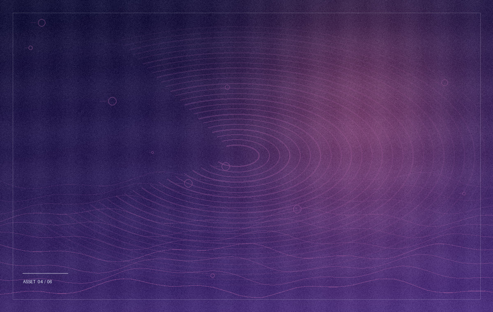
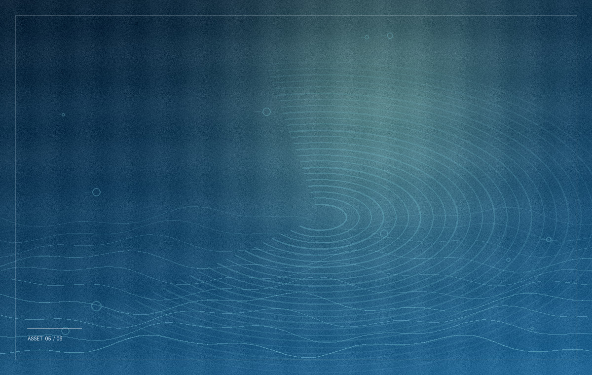
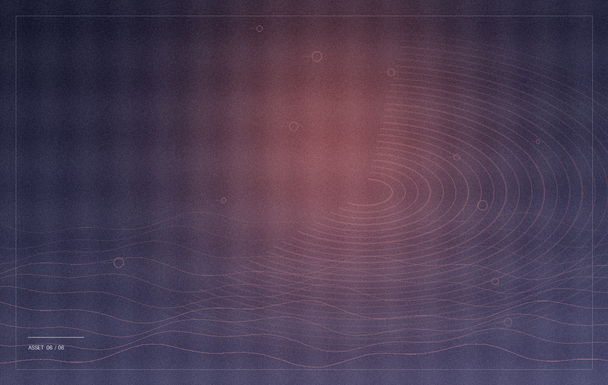

TEST 02 / STATICKÉ SOUBORY
Načítání
obrazového obsahu.
Šest souborů JPEG uložených přímo na hostingu. Měříme načítání stránky s obrázky bez závislosti na externím úložišti.
ODEZVA TTFB—
NAČTENÍ DOKUMENTU—
POČET OBRÁZKŮ—
PŘENESENÁ DATA*—
Soubor obrázků / 006
TESTOVACÍ PODKLADY




